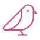

Meu perfil
- Nome: Paola Pietropoli
- Idade: 16 anos
- Aniversário: 05 de Novembro
- Onde moro: Caieiras - SP
- Onde estudo: Instituto J&F


Sou uma pessoa criativa, determinada e sonhadora. Tenho uma conexão especial com a nostalgia, amo música, especialmente MPB e K-pop, e adoro descobrir coisas novas. Também me interesso por tecnologia, design e experiência do usuário. Gosto de aprender, encarar desafios e evoluir um pouquinho todos os dias.
Um pouquinho sobre mim ♡
Meu grupo favorito é o SKZ
Gosto muito de pizza!
Meu MBTI é ENTJ-T

Tenho uma calopsita chamada Dengo.
Gosto muito de teatro e já apresentei 2 musicais.

Além de escutar música também gosto de desenho.